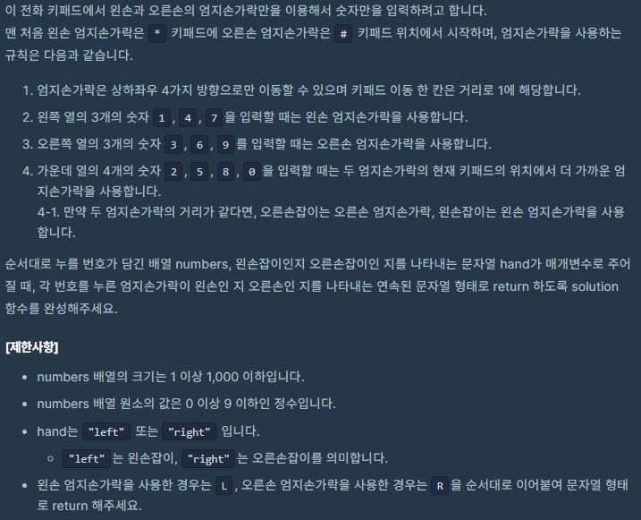
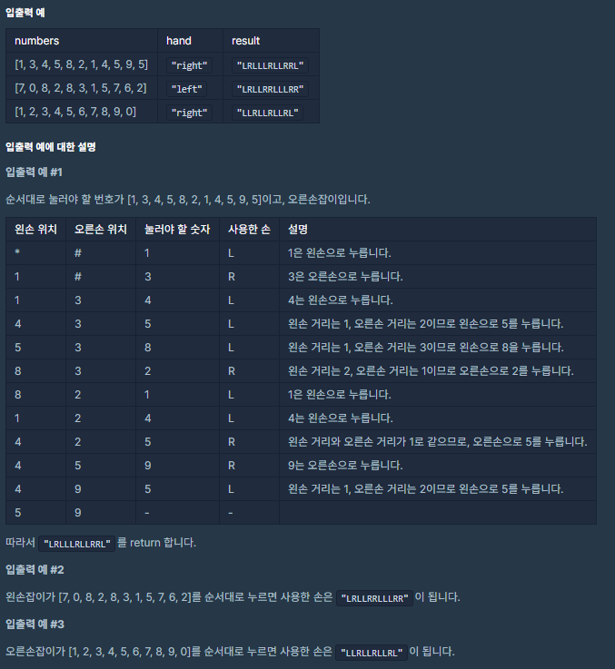
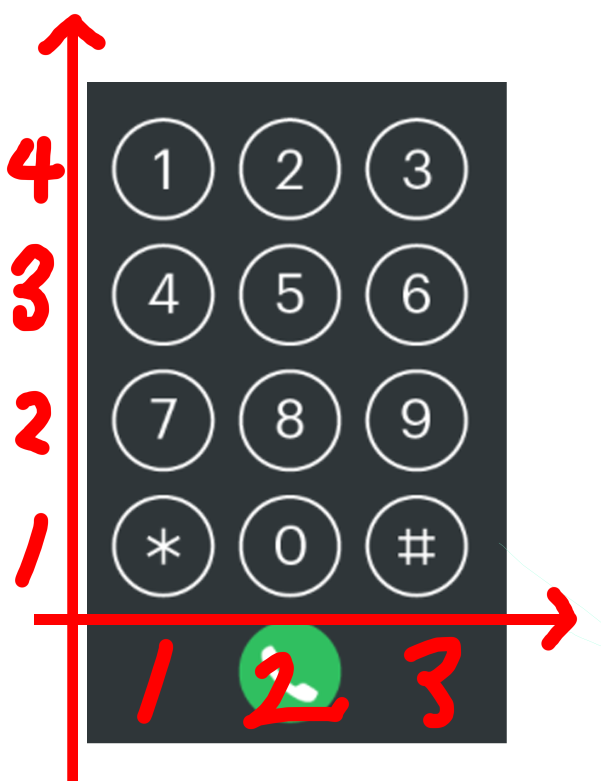

![[Level 1, 카카오 인턴] 프로그래머스 키패드 누르기 코틀린 풀이](/2020/10/25/kakao-intern-press-keypad/thumbnail.png)
[Level 1, 카카오 인턴] 프로그래머스 키패드 누르기 코틀린 풀이
[Level 1] 프로그래머스 [카카오 인턴] 키패드 누르기 코틀린 풀이
문제 소개
이번에 풀어볼 문제는 [카카오 인턴] 키패드 누르기입니다.



키패드를 두손으로 누를때 좌우 어떤 손으로 눌러야 효율적일지 설명에 따라서 코드를 짜면 됩니다.
문제풀이
왼쪽 열의 3개의 숫자 1, 4, 7을 입력할 때는 왼손 엄지손가락을 사용합니다.
오른쪽 열의 3개의 숫자 3, 6, 9를 입력할 때는 오른손 엄지손가락을 사용합니다.
이것은 단순히 if-else를 이용하여 처리하면 되는 간단한 문제지만
가운데 열의 4개의 숫자 2, 5, 8, 0을 입력할 때는 두 엄지손가락의 현재 키패드의 위치에서 더 가까운 엄지손가락을 사용합니다.
만약 두 엄지손가락의 거리가 같다면, 오른손잡이는 오른손 엄지손가락, 왼손잡이는 왼손 엄지손가락을 사용합니다.
부분이 문제의 핵심이었습니다.
제가 생각한 구현 방법은 이러합니다.
거리를 통한 접근

먼저 키패드의 숫자들을 좌표 평면상으로 올려버립니다.
그럼 *은 (1, 1)로 3은 (3, 4)가 되는데 이렇게 좌표평면에 올려버리면 거리를 구할 수 있습니다.
예로 4(1, 3)와 9(3, 2)의 거리는
\[\sqrt{(X1 - X2)^2 + (Y1 - Y2)^2}\]
거리를 구하는 식에 대입하여
\[\sqrt{(1 - 3)^2 + (1 - 4)^2} = \sqrt{13}\]
로 구할 수 있습니다.
이를 이용하여 왼손 - 목표 키, 오른손 - 목표키를 구하는것이 제 목표인데,
엄지손가락은 상하좌우 4가지 방향으로만 이동할 수 있으며 키패드 이동 한 칸은 거리로 1에 해당합니다.
라는 조건이있으니 단순히 유클리드 거리로 구할 수는 없습니다.
하지만 이 거리의 경우의 수는 생각보다 적습니다.
거리가 가로(0 ~ 2), 세로(0 ~ 3)이기 때문에 이 수들의 제곱의 합을 조합해보면 됩니다.
\[0, 1, \sqrt{2}, 2, \sqrt{5}, 2\sqrt{2}, 3, 10, \sqrt{13}\]
그래서 저는 우선 이 거리들을 상하좌우로 움직였을 때의 거리로 반환해주는 함수를 하나 작성했습니다.
1 | fun Int.toKeypadDistance(): Int = when (this) { |
그 다음 우선 이 함수를 이용하려면 키패드의 문자를 좌표로 반환하는 함수가 필요합니다.
1 | fun String.getLoc(): Pair<Int, Int> { |
그래서 *0#789456123에서 입력받은 문자의 순번을 찾아 3으로 나눈 나머지로 x를, 3으로 나눈 몫을 y로 반환하는 함수를 작성했습니다.
이제
\[\sqrt{(X1 - X2)^2 + (Y1 - Y2)^2}\]
식을 코드로 작성해줍시다
1 | fun getDistance(one: Pair<Int, Int>, two: Pair<Int, Int>): Int = |
복잡해보이지만 Pair<Int, Int> 두개를 받아서 제곱하는게 전부입니다.
저는 비교가 목적이니 루트는 생략하였습니다.
이제 필요한 함수들은 모두 작성이 끝났으니 메인 루프를 작성합니다.
눌러야할 숫자들이 담긴 배열을 가지고 for을 돌아줍니다.
돌면서 아까 만든 함수로 거리를 구해줍니다
1 | val leftDX = getDistance(left.getLoc(), it.toString().getLoc()).toKeypadDistance() |
이제 답은 왼손과 오른손으로 구분됩니다.
입력이 2580369에 속해있으면 좌측, 2580(중앙)인데 양손 거리가 같으면 왼손잡이일때 좌측
이 두가지를 제외하고는 전부 우측으로 보내면 됩니다.
조건문을 몰아넣어 조금 길어져서 변수로 빼내었습니다.
1 | answer += when { |
합치면 완성.
1 | fun solution(numbers: IntArray, hand: String): String { |
바로 정답 문자열에 추가까지 하는 코드입니다.
이것으로도 정답이 나오기는 합니다… 만
답을 맞추고나니 방법이 생각났습니다.
좌표값으로 거리 가져오기
그냥 문자를 좌표 평면으로 바꾼 뒤
\[|(X1 - X2)| + |(Y1 - Y2)|\]
를 거치면 바로 조건에서 말한 거리가 나옵니다….
1 | val leftDX = getDistance(left.getLoc(), it.toString().getLoc()).toKeypadDistance() |
코드를 수정하고 다시 제출해도 정답이 나왔습니다.
정답 코드
1 | import kotlin.math.abs |
출처: 프로그래머스 코딩 테스트 연습, https://programmers.co.kr/learn/challenges